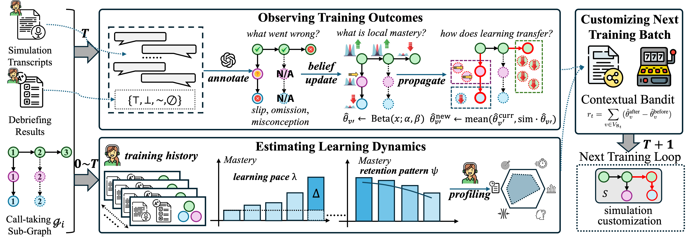

Personalized Adaptive Curriculum for 9-1-1 Training
PACE is a personalized adaptive curriculum engine that tailors 9-1-1 call-taker training to individual trainees. By modeling trainee proficiency and dynamically adjusting scenario difficulty, PACE delivers targeted practice that improves learning efficiency in safety-critical emergency response training.
Adaptive Learning, Trustworthy AI, Safety-Critical Training
Learn more